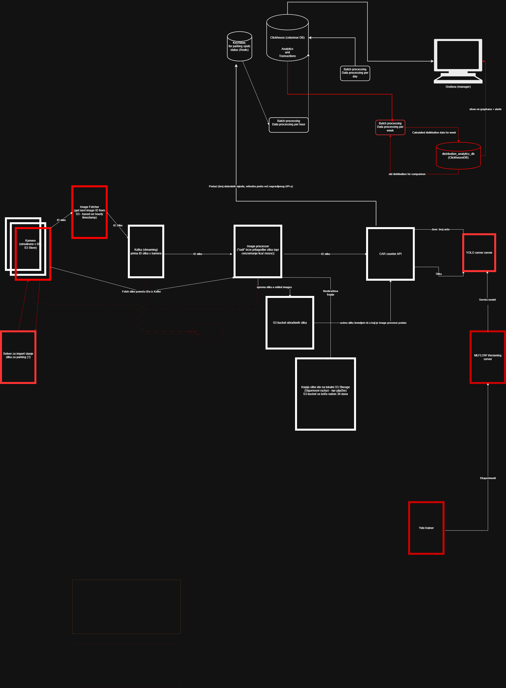

Autori: Benjamin Jakupović i Damjan Đekić
Kontekst: Projekt iz kolegija Inteligentni informacijski sutavi
Ak. god.: 2025./2026.
Verzija dokumentacije: v1
ParkMan je aplikacija koja se sastoji od tri dijela: web aplikacije za upravitelje parkiranja, mobilne aplikacije za korisnike i API-ja za senzore.
Cilj je bio stvoriti aplikaciju koja će:
U ovom dokumentu se prikazuje tehnička dokumentacija nadogradnje sustava Parkman.
U ovoj nadogradnji sustava ParkMan, cilj je bio proširiti postojeće funkcionalnosti sustava dodavanjem:
Na sljedećoj poveznici je detaljnija dokumentacija projekta ParkMan: - Onedrive
Ovo poglavlje opisuje MLOps arhitekturu uvedenu u fazi 5 projekta ParkMan, s fokusom na infrastrukturu, tok podataka i integraciju strojnog učenja u produkcijski pipeline. Arhitektura je dizajnirana kao event-driven mikroservisni sustav, u kojem se pomoću message brokera prosljeđuju podaci (slike) modelu (serviranom i verzioniranom pomoću mlflow-a), koji izvršava inferenciju te se sa batch procesima osigurava spremanje rezultata inferencije za daljnju analitiku.

Na visokoj razini, MLOps arhitektura sastoji se od sljedećih glavnih komponenti:
Image Fetcher
Image Processor
YOLO Inference Server (Car Counter)
MLflow Server
MinIO (S3 Storage)
Redis
ClickHouseDB
Prometheus
Grafana
ETL servisi
Kafka:
Komponente su orkestrirane putem Docker infrastrukture, dok se komunikacija između servisa temelji na jasnoj podjeli odgovornosti i minimalnoj međuzavisnosti.
MLOps pipeline u fazi 5 slijedi deterministički i ponovljiv tok podataka, prikazan u nastavku:
Image Fetcher je servis koji periodički (svaki puni sat) dohvaća sljedeću sliku iz MinIO/S3 bucket-a na temelju timestamp-a iz naziva ključa (S3 key). Odabranu slikku ne preuzima lokalno, već šalje metapodatke (key + parking_lot_id) kroz Kafka topic prema sljedećoj komponenti pipeline-a (Image Processor). Osnovna ideja servisa je da, umjesto nasumičnog uzimanja slike kao prije, osigurava deterministički i reproducibilni redoslijed obrade.
Image Fetcher izvodi sljedeće radnje:
parking_lot_id iz MongoDB-a (prema imenu parkinga)ts > last_ts){image_key, parking_lot_id}last_ts, last_key)Najvažnije varijable okruženja za Image Fetcher su: MinIO/S3
MINIO_ENDPOINT (npr. http://minio:9901)MINIO_ACCESS_KEY, MINIO_SECRET_KEY (pristup MinIO)BUCKET_CAMERA (bucket s dataset slikama)Kafka
KAFKA_BOOTSTRAP (Kafka URL)TOPIC (tema na koju se pretplaćuje)Redis
REDIS_HOST (Redis URL)REDIS_PORTMongoDB (parking_lot_id resolve)
MONGO_MANAGER_DATABASE_R_ONLY_URI (čitanje podataka o parkingu)PARKING_LOT_NAME (ime parkinga koje se dohvaća)MONGO_LOTS_COLLECTION (skup parkinga)Scheduler
FETCH_INTERVAL_SECONDS
0 = spavanje do sljedećeg punog sata>0 = spavanje x broj sekundiNa startu servis resolve-a parking_lot_id na temelju imena parkinga. Dizajnirano je na način da radi samo sa jednim parkingom
def resolve_parking_lot_id() -> str:
if not MONGO_URI:
raise RuntimeError("Missing MONGO_MANAGER_DATABASE_R_ONLY_URI")
client = MongoClient(MONGO_URI)
try:
db = client.get_default_database()
col = db[MONGO_LOTS_COLLECTION]
if PARKING_LOT_NAME_REGEX:
q = {"name": {"$regex": PARKING_LOT_NAME, "$options": "i"}}
else:
q = {"name": PARKING_LOT_NAME}
doc = col.find_one(q, {"_id": 1, "name": 1})
if not doc:
raise RuntimeError(f"Parking lot not found. Query={q}")
return str(doc["_id"])
finally:
client.close()
Fetcher pretpostavlja da timestamp postoji u nazivu objekta (ključu). Podržano je više formata preko regex uzorka, npr.:
YYYY-MM-DD HH:MM:SSYYYYMMDDHHMMSSYYYY/MM/DD/HH/MM/SSParsiranje vraća datetime u UTC formatu:
def parse_ts_from_key(key: str) -> Optional[datetime]:
for pattern in TS_PATTERNS:
m = pattern.search(key)
if not m:
continue
return datetime(y, mo, d, h, mi, s, tzinfo=timezone.utc)
return None
Ako key nema parsabilan timestamp, taj objekt se ignorira i ne ulazi u izbor.
Da bi se izbjegla ponovna obrada istih slika, state se drži u Redis-u kroz dva ključa:
image_fetcher:last_tsimage_fetcher:last_keydef get_last_state(r: redis.Redis) -> Tuple[Optional[datetime], Optional[str]]:
last_ts_raw = r.get(REDIS_KEY_LAST_TS)
last_key_raw = r.get(REDIS_KEY_LAST_KEY)
def set_last_state(r: redis.Redis, ts: datetime, key: str) -> None:
r.set(REDIS_KEY_LAST_TS, ts.isoformat())
r.set(REDIS_KEY_LAST_KEY, key)
Deterministički izbor sljedeće slike omogućava last_ts, dok se last_key koristi za debugging i praćenje zadnje poslanih slika.
Fetcher lista objekte u bucketu (maksimalno do veličine definirane sa S3_MAX_KEYS_SCAN, default 5000), parsira timestamp, sortira i bira:
last_ts ne postoji uzima se najranija slikats > last_tsWRAP_AROUND_TO_START=true, vraća se natrag na početakdef pick_next_key_by_timestamp(keys: List[str], last_ts: Optional[datetime]) -> Optional[Tuple[str, datetime]]:
parsed = [(ts, k) for k in keys if (ts := parse_ts_from_key(k)) is not None]
parsed.sort(key=lambda x: x[0])
if last_ts is None:
ts, k = parsed[0]
return (k, ts)
for ts, k in parsed:
if ts > last_ts:
return (k, ts)
if WRAP_AROUND_TO_START:
ts, k = parsed[0]
return (k, ts)
return None
Kada se odabere slika, šalje se poruka na Kafka topic. Payload je minimalan:
payload = {
"image_key": next_key,
"parking_lot_id": parking_lot_id,
}
producer.send(KAFKA_TOPIC, value=payload)
producer.flush()
Fetcher ima dva režima.
Produkcijski režim (default)
now = datetime.utcnow()
next_hour = (now + timedelta(hours=1)).replace(minute=0, second=0, microsecond=0)
time.sleep((next_hour - now).total_seconds())
Test režim
if FETCH_INTERVAL_SECONDS > 0:
time.sleep(FETCH_INTERVAL_SECONDS)
Image Processor je servis koji se nalazi između Image Fetcher-a i YOLO inferencijskog servisa. Njegova primarna uloga je prostorna normalizacija slika, odnosno izdvajanje samo onog dijela slike koji zaista sadrži parkiralište (ROI - Region of interest).
Time se smanjuje šum u ulaznim podacima, povećava konzistentnost inferencije i pojednostavljuje rad YOLO modela.
Image Processor predstavlja klasičan preprocessing korak u MLOps arhitekturi.
image_key)Dataset korišten u ovoj fazi projekta ima sljedeća svojstva:
Ako bi se cijela slika slala u YOLO model:
Zbog toga je uveden Image Processor koji garantira da YOLO uvijek dobiva prostorno konzistentan input.
U ovoj fazi koristi se statički ROI, definiran u odnosu na dimenzije slike.
ROI je:
Razlozi zašto je korišten statički ROI:
Image Processor prima poruku koja sadrži image_key. Na temelju toga dohvaća originalnu sliku iz MinIO bucket-a.
obj = s3.get_object(Bucket=BUCKET_CAMERA, Key=image_key)
image_bytes = obj["Body"].read()
image = cv2.imdecode(np.frombuffer(image_bytes, np.uint8), cv2.IMREAD_COLOR)
Ako slika ne postoji ili se ne može dekodirati:
ROI se računa dinamički iz dimenzija slike, ali s fiksnim omjerima:
h, w, _ = image.shape
x_start = int(w * 0.55)
y_start = int(h * 0.55)
roi = image[y_start:h, x_start:w]
Ovim pristupom:
Nakon obrade, Image Processor sprema dvije verzije slike
s3.put_object(
Bucket=SECURITY_BUCKET,
Key=image_key,
Body=image_bytes,
ContentType="image/jpeg"
)
_, encoded = cv2.imencode(".jpg", roi)
s3.put_object(
Bucket=PROCESSED_BUCKET,
Key=image_key,
Body=encoded.tobytes(),
ContentType="image/jpeg"
)
Nakon uspješne obrade, Image Processor šalje procesiranu sliku YOLO serveru.
Ovim se Image Processor logički odvaja od inferencije, što je važno MLOps načelo.
Najvažnije varijable okoline:
BUCKET_CAMERA (MinIO bucket sa slikama kamere)BUCKET_SECURITY (Security storage originalnih slika)BUCKET_PROCESSED (Pohrana procesiranih slika)ROI_X_START_RATIO (Postotak slike koji se reže vodoravno)ROI_Y_START_RATIO (Postotak slike koji se reže okomito)Omjeri ROI-ja mogu se prilagoditi bez promjene koda.
Odluka da se YOLO inferencija implementira kao zaseban mikroservis (YOLO Server), umjesto da se ugradi izravno u Car Counter servis, donesena je iz nekoliko arhitektonskih razloga:
YOLO Server je implementiran koristeći FastAPI okvir te izlaže jednostavan REST API za komunikaciju.
Endpoint: POST /predict
Ovaj endpoint prihvaća sliku, provodi inferenciju koristeći učitani model i vraća broj detektiranih objekata ciljane klase.
Ulazni podaci:
file: Slika u binarnom formatu (multipart/form-data).Izlazni podaci (JSON):
{
"car_count": 15
}
Logika inferencije:
Prilikom pokretanja, servis se spaja na MLflow Tracking Server i preuzima artefakte modela definiranog varijablama okoline (MLFLOW_MODEL_NAME i MLFLOW_MODEL_TAG).
# Učitavanje modela s MLflow-a
model_uri = f"models:/{MODEL_NAME}@{MODEL_TAG}"
model = mlflow.pytorch.load_model(model_uri)
Tijekom inferencije, rezultati se filtriraju kako bi se prebrojala samo vozila (klasa koja odgovara detektiranim automobilima u korištenom datasetu).
Car Counter servis djeluje kao klijent YOLO servera. Komunikacija se odvija sinkrono putem HTTP protokola.
Proces rada:
yolo_remote_count koja šalje sliku na adresu definiranu u YOLO_ENDPOINT varijabli (default: http://yolo_server:8000/predict).-1, što signalizira grešku u detekciji.Ovakav dizajn omogućuje labavu povezanost između logike brojanja i same implementacije detekcije.
MLflow je korišten kao centralna platforma za upravljanje cjelokupnim životnim ciklusom modela strojnog učenja u ParkMan sustavu. Njegova uloga je trostruka:
Služi kao centralizirani repozitorij za praćenje eksperimenata. Tijekom faze treniranja, skripta train_with_mlflow.py automatski bilježi sve relevantne informacije za svako pokretanje:
epochs), veličina slike (imgsz), i tip modela (MODEL_TYPE).best.pt), vizualizacije (npr. confusion_matrix.png) i konfiguracijske datoteke (data-visdrone.yaml).Koristi se kao registar modela, odnosno centralno mjesto za verzioniranje i upravljanje modelima koji su spremni za produkciju. Svaki model registriran pod određenim imenom (npr. YOLO_ParkMan_visdrone) može imati više verzija. Verzije se kasnije označuju tagovima (npr. production), što omogućuje jasno razdvajanje modela u razvoju, testiranju i produkciji.
Koristi se mlflow.pytorch modul za spremanje modela u formatu koji je lako učitati u drugim servisima. Kao pozadinska pohrana za sve artefakte (uključujući i same modele) koristi se MinIO S3 storage, što osigurava trajnost i skalabilnost.
Jedna od glavnih prednosti MLflow integracije je dinamičko dohvaćanje modela u YOLO Inference servisu. Servis nije statički povezan s određenom datotekom modela, već dohvaća verziju označenu za produkcijsku upotrebu izravno iz MLflow Model Registry-ja.
Proces je sljedeći:
MLFLOW_MODEL_NAME i MLFLOW_MODEL_TAG.mlflow.pytorch.load_model preuzimaju se artefakti modela s MinIO-a i učitava se model u memoriju.# YOLOServer/main.py
# Configuration
MLFLOW_TRACKING_URI = os.getenv("MLFLOW_TRACKING_URI", "http://mlflow_server:5000")
MODEL_NAME = os.getenv("MLFLOW_MODEL_NAME", "YOLO_ParkMan_visdrone")
MODEL_TAG = os.getenv("MLFLOW_MODEL_TAG", "best_stability")
def load_model():
mlflow.set_tracking_uri(MLFLOW_TRACKING_URI)
# Construct the model URI for the registry (e.g., models:/YOLO_ParkMan_visdrone@best_stability)
model_uri = f"models:/{MODEL_NAME}@{MODEL_TAG}"
return mlflow.pytorch.load_model(model_uri)
Ovaj mehanizam omogućuje "hot-swap" modela u produkciji. Promocija nove, bolje verzije modela svodi se na promjenu taga (npr. premještanje taga best_stability s verzije 2 na verziju 3) unutar MLflow sučelja, bez potrebe za ponovnim pokretanjem ili izmjenom koda YOLO servisa.
Proces treniranja modela u potpunosti je odvojen od produkcijskog pipeline-a. Skripta train_with_mlflow.py izvršava se u zasebnom okruženju, ručno pokrenuta.
Koraci u skripti za treniranje:
mlflow.start_run() konteksta, čime se osigurava da su svi parametri i metrike vezani za jedinstveni ID pokretanja.best.pt) se registrira u MLflow Model Registry-ju.# YOLOModelTraining/train_with_mlflow.py
# ... (nakon završetka treniranja)
# 1. Log the model artifacts to a temporary path
with tempfile.TemporaryDirectory() as tmp_dir:
local_model_path = os.path.join(tmp_dir, "model_build")
mlflow.pytorch.save_model(
pytorch_model=clean_YOLO_model(best_model),
path=local_model_path,
pip_requirements=["ultralytics"]
)
mlflow.log_artifacts(local_model_path, artifact_path="model")
# 2. Register the model from the logged artifacts
model_uri = f"runs:/{run.info.run_id}/model"
reg_model = mlflow.register_model(model_uri, "YOLO_ParkMan_visdrone")
Ovo odvajanje omogućuje slobodno eksperimentiranje s različitim arhitekturama i hiperparametrima bez utjecaja na stabilnost produkcijskog sustava. Tek kada je nova verzija modela temeljito testirana i potvrđena, ona se pomoću taga označava te koristi u produkciji.
Za potrebe YOLO Servera se treniralo više kombinacija YOLO modela. Koristili su se YOLO11m i YOLO11s modeli.
Prilikom treniranja, koristilo se više različitih kombinacija datasetova:
Trenirano je ukupno 6 YOLO modela te je provedena usporedba točnosti modela nad odgovarajućim test dijelovima dataseta (svaki dataset je imao svoj testni skup, što znači da se rezultati ne mogu usporediti).
Naposlijetku je za produkciju izabran YOLO11 small model koji je pretreniran nad skupom podataka Rumunjske. To je osiguralo izrazito visoku preciznost modela (slike koje Image Fetcher dohvaća su one nad kojima je model trenirao) sa svrhom bolje demonstracije rada sustava za detekciju anomalija.
Metrike tog modela su prikazane ispod:
| Metrika | Vrijednost |
|---|---|
| Precision (Box) | 0.9497 |
| Recall (Box) | 0.9590 |
| mAP@50 (Box) | 0.9806 |
| mAP@50-95 (Box) | 0.7924 |
| Validation Box Loss | 0.7818 |
| Validation Class Loss | 0.3926 |
| Validation DFL Loss | 0.9714 |
| Train Box Loss | 0.6195 |
| Train Class Loss | 0.3600 |
| Train DFL Loss | 0.9044 |
| Learning Rate | 0.0003 |
| Model Fitness | 0.7894 |
Za potrebe analitike i batch obrade podataka, uvedena je ClickHouse baza podataka. ClickHouse je odabrana zbog svojih performansi u analitičkim upitima nad velikim količinama podataka (OLAP).
Za trenutnu fazu (prikazanu u ovom projektu), koriste se dvije ključne tablice unutar parking_db baze:
parking_usageOva tablica služi kao "fact table" koja pohranjuje sirove podatke o zauzetosti parkinga kroz vrijeme. Podaci se u ovu tablicu dodaju iz Redisa putem ETL procesa svakih sat vremena.
Shema tablice:
timestamp (DateTime): Vrijeme uzorkovanja podatka.owner_id (String): ID vlasnika parkinga.owner_full_name (String): Ime i prezime vlasnika.parking_lot_id (String): Jedinstveni identifikator parkinga.parking_lot_name (String): Naziv parkinga.parking_spot_number (Int32): Ukupan kapacitet parkinga.car_count (Int32): Broj detektiranih vozila.Optimizacija:
Tablica koristi MergeTree engine.
(owner_id, toYYYYMM(timestamp)) - omogućuje efikasno upravljanje podacima po vlasnicima i mjesecima.(owner_id, parking_lot_id, timestamp) - optimizira upite koji filtriraju po vlasniku i parkingu te dohvaćaju vremenske serije.parking_usage_baselineOva tablica pohranjuje izračunate tjedne distribucije (baseline) zauzetosti za svaki parking. Koristi se za detekciju anomalija usporedbom trenutnog stanja s povijesnim prosjekom.
Shema tablice:
baseline_id (String): Jedinstveni ID tjednog izračuna.calculation_date (Date): Datum kada je prosjek izračunat.parking_lot_id (String): Referenca na parking.hour_of_day (UInt8): Sat u danu (0-23) za koji vrijedi statistika.avg_car_count (Float64): Prosječan broj vozila (aritmetička sredina).std_dev_car_count (Float64): Standardna devijacija (koristi se za Z-score).max_observed_cars (Int32): Maksimalni zabilježeni broj vozila (za planiranje kapaciteta).sample_count (Int32): Broj uzoraka korištenih za izračun.is_active (UInt8): Zastavica koja označava je li ovo trenutno važeći baseline.Optimizacija:
Tablica koristi ReplacingMergeTree engine, što omogućuje ažuriranje zapisa (npr. deaktivaciju starih baseline-ova) zamjenom redaka s istim ključem sortiranja.
(parking_lot_id, hour_of_day, calculation_date).U ovoj fazi projekta poseban je naglasak stavljen na upravljanje dataset-om i testiranje ponašanja MLOps pipeline-a u prisutnosti anomalnih ulaznih podataka. U tu svrhu uvedeni su:
Cilj ovog projekta je pokazati da MLOps pipeline nije testiran samo na "idealnim" podacima, već i na namjerno narušenim scenarijima.
Za potrebe treniranja i testiranja modela, kao i za simulaciju rada sustava u realnom vremenu, bilo je potrebno prikupiti vlastiti skup podataka. Taj dataset sadrži sekvencijalne slike parkinga u Rumunjskoj, preuzete tijekom razdoblja od 2 tjedna, gdje su se slike prikupljale svakih sat vremena. Dodatno je prikupljeno i tjedan dana slika iz parkinga u Milanu. Te slike su označene te su one činile jednu varijantu skupa podataka nad kojim se trenirao YOLO model. Slike iz grada u Rumunjskoj su se zatim koristile kao sekvencijalni niz slika za jedan konkretan parking u ParkMan sustavu. Time se omogućilo smisleno računanje distribucije parkinga kroz vrijeme. Slike iz Milana su se zatim koristile kao "loše" slike koje se injektirale u dataset kako bi pokvarile distribuciju tijekom testiranja sustava za uvid u anomalije.
Proces prikupljanja podataka automatiziran je pomoću Python skripti (izvršavanih unutar Jupyter Notebook okruženja) koje periodički dohvaćaju slike s javno dostupnih IP kamera.
Izvori podataka: Korištene su javne kamere koje prikazuju parkirališta u različitim gradovima (Milano, lokacija u Rumunjskoj). Odabir kamera vršen je na temelju lakoće pristupa streamu i jasnog pogleda na parkirna mjesta.
Tehnička implementacija:
Skripta za prikupljanje podataka (periodic_image_save.ipynb) funkcionira na sljedeći način:
chunks).0xFFD8) i završne (0xFFD9) bajtove koji označavaju JPEG sliku. Na taj način se iz kontinuiranog video streama izdvaja jedan validan frame.parking_spot_images). Datoteke se imenuju uz precizan vremenski žig (npr. parking_spot_2025-01-15_14-30-00.jpg). Ovo je kasnije ključno za simulaciju "vremenskog protoka" u Image Fetcher servisu.COLLECTING_HOUR_LENGTH).Ovaj pristup omogućio je stvaranje dataset-a koji je konzistentan za jedan konkretan parking u ParkMan sustavu.
U realnim sustavima za nadzor parkirališta, ulazni podaci često odstupaju od očekivanog obrasca. Mogu se pojaviti:
Ako se pipeline testira isključivo na "čistom" dataset-u:
Zbog tog razloga uveden je Bad Image Injector koji omogućuje kontrolirano i reproducibilno narušavanje dataset-a bez promjene u glavnom pipeline-u.
Bad Image Injector je pomoćni servis koji:
Njegova zadaća je ubacivanje anomalnih slika u dataset na način koji je u potpunosti transparentan ostatku sustava. Time se ponaša kao generalni izvor grešaka, a ne kao workaround ili debug alat.
Bad Image Injector radi u sljedećim koracima:
Bad Image Injector koristi timestamp-based sustav imenovanja kako bi se:
Primjeri scenarija:
Ovaj pristup omogućuje preciznu kontrolu nad eksperimentom.
Bad Image Injector direktno komunicira s MinIO/S3 storage-om. Injekcija se svodi na spremanje nove slike s validnik key-em:
s3.put_object(
Bucket=BUCKET_CAMERA,
Key=target_key,
Body=image_bytes,
ContentType="image/jpeg"
)
Budući da se koristi isti bucket i ista naming konvencija:
U ovoj fazi projekta fokus je na jednostavnim, ali efektivnim anomalijama. Budući da se za YOLO servis uvijek pripremaju slike sa istog parkirališta, Bad Image Injector uzima slike sa drugog parkirališta na kojima u potpunosti ili gotovo nema automobila.
Ovakav slučaj dovoljan je za testiranje:
Anomalne slike koje Bad Image Injector ubacuje:
Time se omogućuje:
U MLOps pipeline-u koji obrađuje vremenski organizirane podatke, upravljanje stanjem (state management) predstavlja ključni mehanizam za osiguravanje determinističkog ponašanja, konzistentnosti obrade i izbjegavanje dupliciranja podataka.
State management je u ovom projektu centraliziran pomoću Redis baze, koja služi kao lagana, brza i pouzdana komponenta za dijeljenje stanja između iteracija pipeline-a.
Bez eksplicitnog upravljanja stanjem, MLOps pipeline bi imao sljedeće probleme:
S obzirom na to da se ingestion temelji na timestamp-u, stanje sustava mora sadržavati informaciju o tome koja je zadnja slika obrađena.
Redis je odabran kao centralni store stanja zbog sljedećih razloga:
Redis se koristi isključivo za state, a ne za pohranu rezultata ili podataka visoke trajnosti.
Implementirani su sljedeći ključevi:
image_fetcher:last_ts
image_fetcher:last_key
Ovi ključevi predstavljaju minimalni, ali dovoljan state potreban za determinističko ponašanje pipeline-a.
Image Fetcher koristi Redis state u svakom ciklusu rada:
last_ts i last_keyts > last_tslast_ts, last_key = get_last_state(redis_client)
next_key, next_ts = pick_next_key_by_timestamp(keys, last_ts)
producer.send(TOPIC, payload)
producer.flush()
set_last_state(redis_client, next_ts, next_key)
Ovim redoslijedom osigurava se da:
Jedna od važnih prednosti Redis-based state management-a je otpornost na restart servisa.
Scenarij:
last_tsNa taj način:
Bad Image Injector namjerno ne koristi Redis state, ali ga indirektno iskorištava:
Iako MLOps infrastruktura razvijena u fazi 4 projekta ParkMan zadovoljava ciljeve eksperimentalnog okruženja, sustav ima niz svjesno prihvaćenih ograničenja i dizajnerskih trade-off-ova.
Ovo poglavlje opisuje ta ograničenja, razloge iza njih te implikacije na stabilnost, skalabilnost i budući razvoj sustava.
Popis ograničenja i poznatih trade-off-ova:
last_ts, last_key). Time se postiže jednostavnost i reproducibilnost, uz cijenu izostanka granularnog praćenja statusa obrade po sliciSva navedena ograničenja predstavljaju svjesne dizajnerske odluke prilagođene eksperimentalnoj prirodi projekta te služe kao jasna polazišta za budući razvoj sustava.
U ovom poglavlju naveden je popis mogućih budućih smjerova razvoja projekta.
U fazi 5 projekta ParMan razvijena je funkcionalna MLOps infrastruktura koja nadograđuje postojeći sustav za detekciju vozila kontroliranim ingestionom podataka, prostornom normalizacijom ulaznih slika i odvojenom inferencijom i batch analizom.
Korištenjem vremenski organiziranog dataset-a, Redis-based state management-a i MLflow registry-ja postignuta je deterministička i reproducibilna obrada podataka, što je temelj svakog ozbiljnog MLOps sustava.
Uvođenje Image Processora i Bad Image Injecotr-a omogućilo je stabilniji rad modela te testiranje ponašanja sustava izvan idealnih scenarije, čime je pipeline validiran i na anomalnim podacima.
Iako sustav ima svjesno prihvaćena ograničenja, ona proizlaze iz eksperimentalne prirode projekta te predstavljaju jasne smjernice za budući razvoj.
Ova faza projekta pokazuje kako se računalni vid može integrirati u širi MLOps kontekst, prelazeći s izolirane model-inferencije prema cjelovitom, skalabilnom i proširivom sustavu